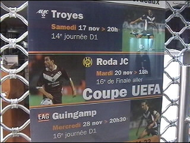
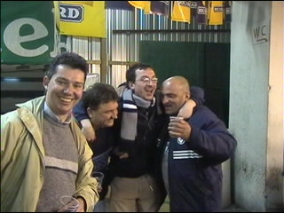
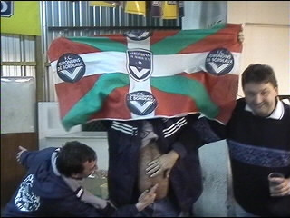
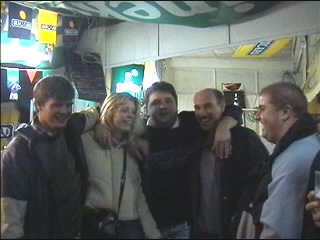
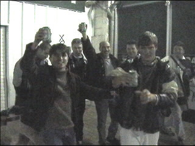
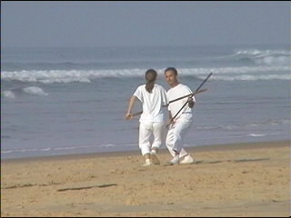
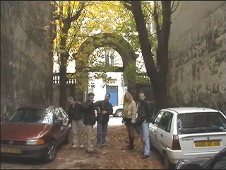
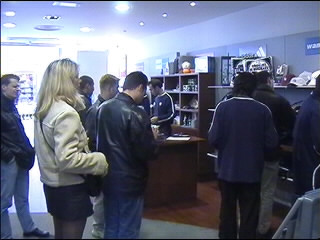
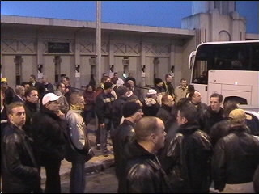

| FC Girondins de Bordeaux - Roda JC 1-0 20 november 2001 |

Op zaterdag moest Roda tegen Willem II aantreden en Bordeaux tegen Troyes.

Ondanks het 2-3 verlies van Bordeaux bleven deze Basken die met een busje
naar Bordeaux waren gekomen, goed geluimd.

Het werd zelfs uitermate gezellig in hun buvette Le Ronde Point.

Vluchten kon niet meer, we moesten meezingen en -springen.

Totdat we eruitgezet werden rond middernacht. Gelukkig konden we nog wat
blikjes scoren.

De dag erna een kater dus naar het strand. Dit is in Lacanau waar de beste surfers
van de wereld bijeenkomen. Op de foto een potje knuppelen.

Op maandag arriveerden al wat meer Rodasupporters. Deze gasten hadden wat
moeite met inparkeren ;-)

De fanshop van FCGdB in de Rue Ste.-Catherine, de lange winkelstraat. Hier
verdienden de uitbaters goud aan het Roda-legioen.

Op zondag was het nog bijna 20 graden. Op maandagavond nog nauwelijks vijf!
De fans wachten tot de spelers komen aangezien er om 18.00 uur een training
is gepland.